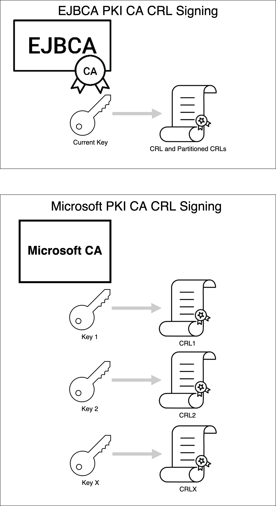
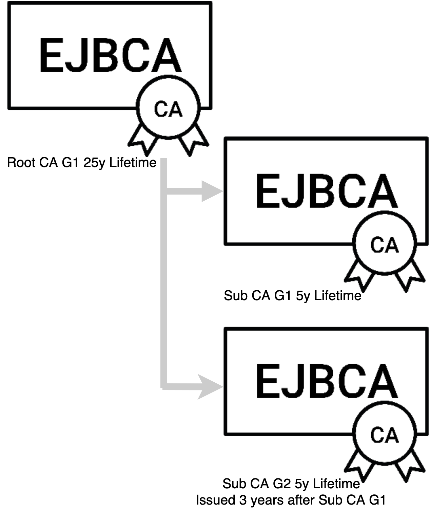

CA Rekey Recommendations
The following describes PrimeKey's recommendations for CA Rekey in production environments.
Introduction
A Root CA functions as a trust anchor, in devices, operating systems, web browsers, etc. A Root CA issues itself a self-signed certificate that is provisioned into systems, typically in a trust store, keeping several Root CA certificates (for example the Mozilla web browser trust store). The self-signed certificate issued by a Root CA typically has long validity, commonly a minimum of 10 years, but ranging up to 40 years, or sometimes infinity for IoT initial device IDs. Shorter validity times also exist, for example, standardized by ICAO and EU for ePassports and eIDs.
The reason validity times are long for Root CAs is that the process of updating the trust store with a new Root CA certificate requires a separate process. Since the Root CA certificate is self-signed it can not be simply distributed as clients have no way of trusting the integrity of the new Root CA certificate and adding rogue Root CA certificates will compromise the security of the whole system. Processes to update Root CA certificates can be a software update, a specific trust store update (i.e. Mozilla, etc) or a specific protocol message. In some use cases, so-called link certificates are used to trust new Root CA certificates as they are distributed, by trusting the old Root CA certificate and chain for verifying the new Root CA certificate can be built. This is not supported in many use cases, however.
When a Root CA expires there are at least two different choices regarding the new Root CA:
Keep the same Root CA Subject Distinguished Name (DN), only create a new CA key and CA certificate, i.e. the old Root CA with a new key.
Create a new Root CA Subject Distinguished Name (DN), create a new CA key and CA certificate, i.e. a fresh new Root CA.
While the first approach may seem attractive it has a number of potential issues when considering a system with both old client (with only the old Root CA) and new client (with the old and the new Root CA):
Complicating certificate path building with multiple CAs with the same DN, on both old and new client.
CRL issuance and verification of old and new clients.
Although it may not sound too complicated, history is riddled with different client implementations making different decisions causing interoperability issues, and severe outages, over time. Keeping it simple can avoid some of these issues.
Due to this, the recommended approach when a Root CA expires is to start a new fresh Root CA, migrating client over to the new Root as they expire and are renewed. The old client can get the new Root CA certificate update in order to communicate with new clients, keeping certificate paths simple.
Having a process to completely replace an old CA with a new CA is always a good recommendation as having this process in place also makes your organization more agile when it comes to compromises, crypto vulnerabilities, and potential future topics such as post-quantum cryptography.
General Recommendations
Our general recommendation, which is more detailed in the section below are to always create a new CA subject DN when renewing Root CAs.
Create a new Unique CA DN, e.g.; CN=Corporate Issuing CA G1 or CN=Corporate Issuing CA G2, etc.
Perform the process in good time before the old CA expires and transition clients in a controlled way.
Unless you really know what you are doing, in which case EJBCA has easy to use functions for renewal keeping the same CA subject DN.
Microsoft Application PKI Interoperability
Microsoft applications do not support link certificates for the Root CA, and also requires the CA key that signed the issued certificate to sign the corresponding CRL. EJBCA signs the CRL with the latest CA key, which is normally not a problem when the old CA certificate expires and a new is created as CRLs entries are removed upon expiration. A key update in EJBCA before CA certificate expiration would break Microsoft applications from being able to validate certificates issued by the previous CA key. The diagram below illustrates EJBCA and Microsoft CA signing.

Renew a CA Used by Microsoft Applications
PrimeKey recommends creating a new CA DN for CA key updates when using EJBCA in environments that support Microsoft applications. This is a model that Web PKI / WebTrust PKIs use and it provides a number of advantages for the PKI that include:
Unique CA DN, e.g.; CN=Corporate Issuing CA G1 or CN=Corporate Issuing CA G2
Users and PKI administrators can easily distinguish which CA chain is which
Maximum interoperability with all applications
The Web PKI model is illustrated in the following diagram.

The example shown in this illustration consists of a Root CA with a 25 year lifetime and Subordinate CA with a 5 year lifetime. The G1 Subordinate CA issues certificates for 3 years, and at the third year issuance transitions to the Subordinate CA G2. Subordinate CA G1 is only online to sign CRL's and OCSP signer certificates until it expires. All new certificate issuance is off of Subordinate CA G2. Once the 3rd year of issuance from Subordinate CA G2 approaches Subordinate CA G3 is deployed. This process repeats until the Root CA is near expiry. When the Root CA nears expiry a new Root CA and Subordinate CA are deployed.
ICAO PKI Interoperability
In the ICAO PKI (ePassports), link certificates are used to build trust between old and new Root CA certificates (called a Country Signing CA in ICAO PKI). ICAO PKI has a special (non RFC5280 compliant) way of dealing with CRLs, where a country only has one CRL even f there are multiple (generations) of CAs, i.e. all CRL records from old CAs are moved over to the new CRL even if the issued DN is different. To handle this, among other things, ICAO has defined a specific Name Change Extension, used to signal that the new Root CA has a new subject DN.
The recommendations for when updating a Country Signing CA is the same as for the Microsoft case:
Create a new Unique CA DN, e.g.; CN=Country Signing CA G1 or CN=Country Signing CA G2, or use another DN component, i.e. CN=CSCA, SerialNumber=100 or CN=CSCA, SerialNumber=101, etc
Use the ICAO NameChange certificate extension
Create a link certificate when generating the new CSCA
For more information, see ePassport PKI.